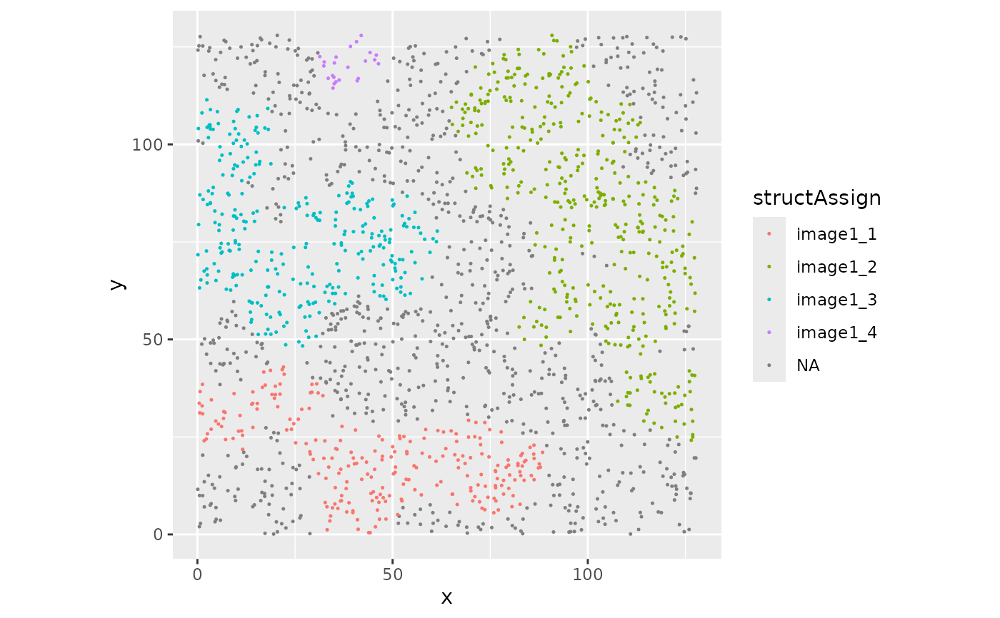

Function to assign points / coordinates to structures
Source:R/cellLevelMetrics.R
assingCellsToStructures.RdThis function assigns each spatial coordinate in a SpatialExperiment object (spe) to the first intersecting structure from a given set of spatial structures.
Arguments
- spe
SpatialExperiment; An object of class
SpatialExperimentcontaining spatial point data.- allStructs
sf; A simple feature collection (sf object) representing spatial structures. Must contain a column which contains a unique identifier for each structure. Default =
structID.- imageCol
character; The column name in
speandallStructsthat identifies the corresponding image.- uniqueId
character; The column name in the simple feature collection for which to compute the assignment.
- nCores
integer; The number of cores to use for parallel processing (default is 1).
Value
A vector with structure assignments for each spatial point in spe. Points that do not overlap with any structure are assigned NA.
Examples
library("SpatialExperiment")
#> Loading required package: SingleCellExperiment
#> Loading required package: SummarizedExperiment
#> Loading required package: MatrixGenerics
#> Loading required package: matrixStats
#>
#> Attaching package: ‘MatrixGenerics’
#> The following objects are masked from ‘package:matrixStats’:
#>
#> colAlls, colAnyNAs, colAnys, colAvgsPerRowSet, colCollapse,
#> colCounts, colCummaxs, colCummins, colCumprods, colCumsums,
#> colDiffs, colIQRDiffs, colIQRs, colLogSumExps, colMadDiffs,
#> colMads, colMaxs, colMeans2, colMedians, colMins, colOrderStats,
#> colProds, colQuantiles, colRanges, colRanks, colSdDiffs, colSds,
#> colSums2, colTabulates, colVarDiffs, colVars, colWeightedMads,
#> colWeightedMeans, colWeightedMedians, colWeightedSds,
#> colWeightedVars, rowAlls, rowAnyNAs, rowAnys, rowAvgsPerColSet,
#> rowCollapse, rowCounts, rowCummaxs, rowCummins, rowCumprods,
#> rowCumsums, rowDiffs, rowIQRDiffs, rowIQRs, rowLogSumExps,
#> rowMadDiffs, rowMads, rowMaxs, rowMeans2, rowMedians, rowMins,
#> rowOrderStats, rowProds, rowQuantiles, rowRanges, rowRanks,
#> rowSdDiffs, rowSds, rowSums2, rowTabulates, rowVarDiffs, rowVars,
#> rowWeightedMads, rowWeightedMeans, rowWeightedMedians,
#> rowWeightedSds, rowWeightedVars
#> Loading required package: GenomicRanges
#> Loading required package: stats4
#> Loading required package: BiocGenerics
#>
#> Attaching package: ‘BiocGenerics’
#> The following objects are masked from ‘package:stats’:
#>
#> IQR, mad, sd, var, xtabs
#> The following objects are masked from ‘package:base’:
#>
#> Filter, Find, Map, Position, Reduce, anyDuplicated, aperm, append,
#> as.data.frame, basename, cbind, colnames, dirname, do.call,
#> duplicated, eval, evalq, get, grep, grepl, intersect, is.unsorted,
#> lapply, mapply, match, mget, order, paste, pmax, pmax.int, pmin,
#> pmin.int, rank, rbind, rownames, sapply, saveRDS, setdiff, table,
#> tapply, union, unique, unsplit, which.max, which.min
#> Loading required package: S4Vectors
#>
#> Attaching package: ‘S4Vectors’
#> The following object is masked from ‘package:utils’:
#>
#> findMatches
#> The following objects are masked from ‘package:base’:
#>
#> I, expand.grid, unname
#> Loading required package: IRanges
#> Loading required package: GenomeInfoDb
#> Loading required package: Biobase
#> Welcome to Bioconductor
#>
#> Vignettes contain introductory material; view with
#> 'browseVignettes()'. To cite Bioconductor, see
#> 'citation("Biobase")', and for packages 'citation("pkgname")'.
#>
#> Attaching package: ‘Biobase’
#> The following object is masked from ‘package:MatrixGenerics’:
#>
#> rowMedians
#> The following objects are masked from ‘package:matrixStats’:
#>
#> anyMissing, rowMedians
data("sostaSPE")
allStructs <- reconstructShapeDensitySPE(sostaSPE,
marks = "cellType", imageCol = "imageName",
markSelect = "A", bndw = 3.5, thres = 0.045
)
colData(sostaSPE)$structAssign <- assingCellsToStructures(
spe = sostaSPE, allStructs = allStructs, imageCol = "imageName"
)
if (require("ggplot2")) {
cbind(
colData(sostaSPE[, sostaSPE[["imageName"]] == "image1"]),
spatialCoords(sostaSPE[, sostaSPE[["imageName"]] == "image1"])
) |>
as.data.frame() |>
ggplot(aes(x = x, y = y, color = structAssign)) +
geom_point(size = 0.25) +
coord_equal()
}
#> Loading required package: ggplot2
